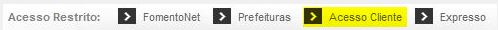
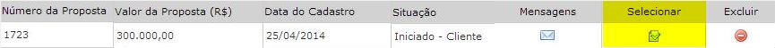

5. Preparando Documentos - Fase do Cliente
Created Wednesday 21 May 2014
Nessa etapa o cliente deve enviar os documentos, as fichas e as declarações que estiverem listadas em sua proposta.
Para ter acesso a elas, orientar os seguintes passos:
1) Acessar a proposta com login e senha já existente; (site da Fomento / acesso restrito).

2) Clicar em selecionar;

3) Caso os documentos não estejam listados o cliente só precisa clicar na opção "impressão".
OBS: Muitas vezes o cliente retornou nessa fase para o envio de alguma documento complementar solicitado pelo cadastro. Nesse caso, abriri as mensagens do cliente para verificar se é retorno de fase ou não.
eralmente no retorno de fase, constará os documentos complemetares que o cliente deve enviar, sendo assim, apenas orientá-lo a fazer o envio para que sua proposta de andamento.
Backlinks: 3. Como solicitar financiamento pelo site